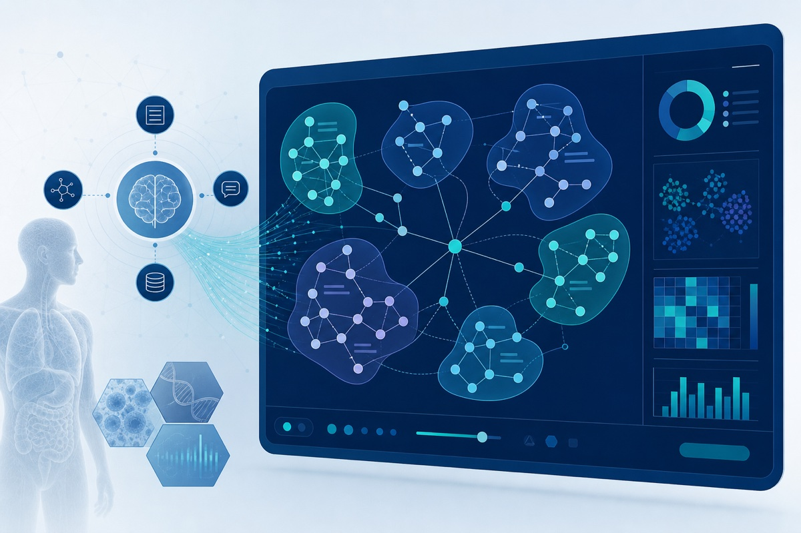

Projects
The Gong Lab leads and contributes to AI and informatics projects spanning clinical trial matching, real-world evidence, cancer equity, and digital oncology. Below are active and recent research initiatives.
Clinical Trial Patient Matching (CTPM) / CtrlTrial
CTPM is our flagship research platform for semiautomated prescreening of cancer patients against open clinical trials. CtrlTrial is the same technology, translated from Yale research into health system practice—founded by Dr. Gong to deploy AI-driven trial matching at scale.
What it does
- Ingests structured and unstructured EHR data via the OMOP common data model
- Applies hybrid rules-based and NLP logic to evaluate inclusion/exclusion criteria
- Delivers real-time feasibility assessments and patient-trial match lists
- Prescreens patients from Epic and integrated clinical, pathology, laboratory, and CTMS systems
- Notifies clinicians and trial teams when patients become eligible
- Scales across trials, cancer types, and health system deployments
Related work
- Catchment-area deployment to reduce enrollment disparities in the Yale Cancer Center catchment area
- ImPACCT: improving participation in cancer clinical trials among underrepresented patients
- Prospective evaluation in hematologic malignancies (MDS and multiple myeloma)
- Retrospective demographic studies of trial underrepresentation across NCI-designated cancer centers
Developed through Yale research programs and Yale Tsai CITY entrepreneurship initiatives, with pilot validation at Yale New Haven Health. Supported by Yale Cancer Center T-TARE, YNHH Innovation Awards, Blavatnik Accelerator Award, Yale Cancer Center Catchment Area Research Award, Rothberg Catalyzer Prize, and Connecticut Innovations BioPipeline Award.
Eligibility Criteria Visualizer

An NLP framework for structuring and exploring clinical trial eligibility criteria at scale.
Approach
- Unsupervised clustering of semantically similar criteria from trial protocols
- LLM-based summarization of criteria clusters
- Interactive visualization of patterns by disease domain and over time
The prototype analyzed 53,000+ oncology trials from ClinicalTrials.gov. Open-source tools are available via the CriteriaVisualizer repository.
Supported by the Yale New Haven Health Innovation Award.
LEAD-ONC & evidence-driven trial design
An AI-assisted framework for automated extraction and harmonization of clinical trial data from oncology literature (LEAD-ONC), combined with Learning from Literature — integrating LLMs and Bayesian hierarchical modeling to inform oncology trial design from published evidence.
Goals
- Digitize and harmonize trial endpoints, arms, and outcomes from the literature
- Support Bayesian evidence synthesis for trial planning
- Bridge clinical trial registries, literature, and real-world data for design decisions
Related pending work includes NIH-funded integration and digitalization of clinical trial registries and literature for evidence synthesis.
LEAD-ONC preprint → · Learning from Literature (in press) →
Real-time EHR data integrity
A collaborative project with the Schulz Lab assessing whether real-time EHR extracts meet the quality standards required for clinical research—benchmarking latency, completeness, and accuracy against research-grade datasets.
This work underpins all CTPM and real-world evidence pipelines that rely on live EHR feeds.
Digital oncology & real-world evidence
AI-driven quality improvement and real-world evidence studies in breast and prostate oncology.
QI-ATIR — An AI tool for automatically identifying high-risk recurrence in HR+, HER2− early breast cancer patients, supporting quality improvement in adjuvant therapy decisions. With Maryam Lustberg, MD, MPH.
BID CAP — A bidirectional communication tool to optimize adherence and persistence to CDK4/6 inhibitors in HR+/HER2− breast cancer. PI for Yale subaward.
CDK4/6 persistence studies — Real-world analyses of treatment persistence, area deprivation index associations, and concept-mapping strategies to improve adherence. Presented at NCCN, AACR, and HOPA.
Biomarker and genomic testing in prostate cancer — Identifying gaps and implementing quality improvement solutions for biomarker and genomic testing. With William K. Oh, MD.
Supported by Eli Lilly, ASCO, and Pfizer.
Cancer equity & trial access
Research focused on equitable access to clinical trials, genetic testing, and biobanking.
AI-assisted navigation for hereditary breast cancer testing — Mitigating disparities in genetic testing access through AI-assisted patient navigation. With Tracy A. Battaglia, MD, MPH (Susan G. Komen Foundation).
BRIDGE — Assessing biobanking representation, integration, and diversifying community engagement in cancer care equity research. With Shilpa Murthy, MD, MPH.
ImPACCT — Improving participation in cancer clinical trials by addressing provider and patient barriers to enrollment among underrepresented groups. With Andrea Silber, MD (ASCO).
CTPM catchment-area disparities — Deploying AI-based patient matching to identify and reduce enrollment disparities in the Yale Cancer Center catchment area.
Precision medicine & genetics informatics
INSPIRE 2.0 genetics database — Establishment and completion of a genetics database for the Yale Cancer Center catchment area. With Veda Giri, MD and Nancy Borstelmann, PhD, MPH.
DOD ENGAGEMENT study — Leveraging AI to develop a genetics database of clinical and genetic factors to inform cancer risks and cascade testing in families.
Early-onset breast cancer cohort — Clinical, genetic, family history, and reproductive differences in early- versus late-onset breast cancer in a diverse cohort.
Adaptive education & emerging initiatives
AI-powered adaptive education platform — Optimizing first-line maintenance therapy education for HER2+ metastatic breast cancer (Pfizer).
AI-enabled clinical trial registry integration — Pending NIH award to integrate and digitize clinical trial registries and literature for evidence synthesis and trial design. With Wei Wei as Co-PI.
Research informatics infrastructure
We contribute to Yale-wide informatics initiatives including:
- Patient recruitment workflows connecting primary care providers through the EMR and patient portal
- Real-time specimen identification for collaborative biobanking
- Computational phenotyping pipelines for precision medicine
- Blockchain-based data integrity validation (TrialChain)
These projects build on Dr. Gong’s experience at Epic Systems, InterSystems, the Yale/YNHH Center for Outcomes Research and Evaluation (CORE), and over a decade of health IT development prior to joining Yale School of Medicine.